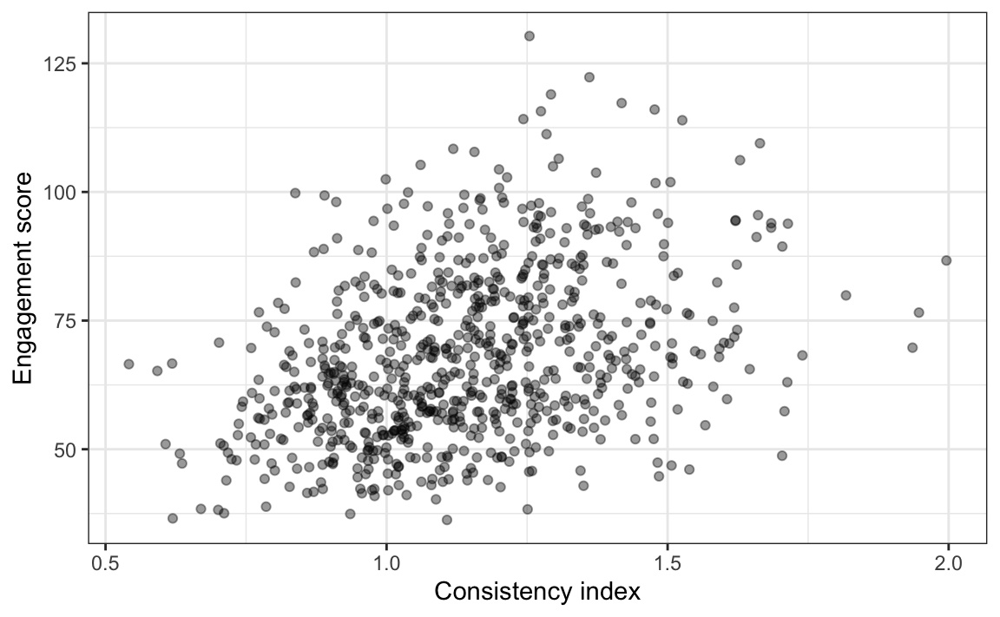
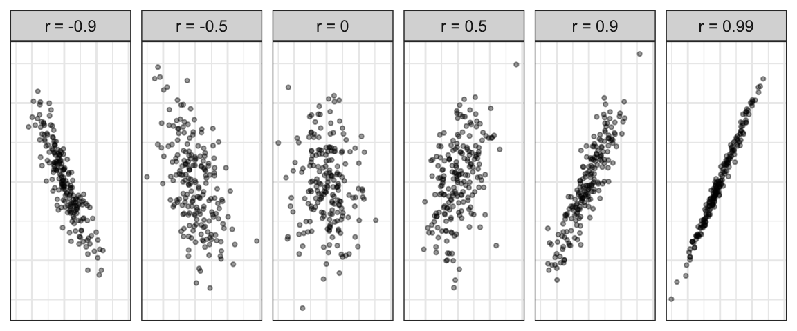
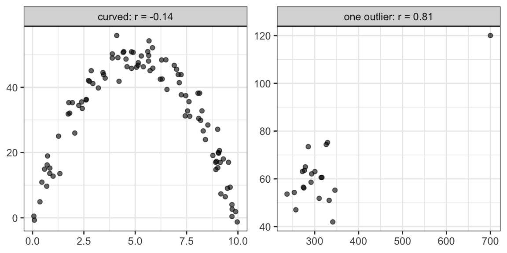

library(tidyverse)
library(behdslabs)
d <- app_engagement_experiment |> filter(!is.na(consistency_index))23 Correlation
Draft
This chapter is a draft, written with an AI assistant (Claude) on 29 October 2026, and not yet reviewed by the instructor. It may be substantially rewritten or removed.
Many questions in behavioural research are about two numerical variables measured on the same people. Do participants with a larger working memory span read faster? Do users who are more consistent from one session to the next also engage more with an app? A scatterplot shows the answer; the correlation coefficient summarizes it in one number. In this chapter, we review Pearson’s correlation, its rank-based version, Spearman’s correlation, and the cases in which a correlation is misleading.
23.1 Look first: the scatterplot
We use the app_engagement_experiment dataset from behdslabs, which records, for each user of an app, an engagement score and a session-to-session consistency index, among other variables. Four users have no consistency index, so we drop them first:
d |>
ggplot(aes(consistency_index, engagement_score)) +
geom_point(alpha = 0.4) +
labs(x = "Consistency index", y = "Engagement score")
The cloud of points tilts upward: users with a higher consistency index tend to have higher engagement scores, although there is a lot of scatter. How strong is this tendency?
23.2 Pearson’s correlation coefficient
To measure how two variables go together, we first convert each one to standard units (Section 22.3), so that both are on the same scale: 0 is the average, and 1 is one standard deviation. Then, for each person, we multiply the two z-scores. The product is positive when the person is above average on both variables, or below average on both; it is negative when the person is above average on one and below on the other. The correlation coefficient is the average of these products:
\[ r = \frac{1}{n-1} \sum_{i=1}^n \left(\frac{x_i - \bar{x}}{s_x}\right)\left(\frac{y_i - \bar{y}}{s_y}\right) \]
We divide by \(n - 1\), as for the standard deviation (Section 22.2.2). We can compute it by hand and with cor():
z_x <- (d$consistency_index - mean(d$consistency_index)) / sd(d$consistency_index)
z_y <- (d$engagement_score - mean(d$engagement_score)) / sd(d$engagement_score)
sum(z_x * z_y) / (nrow(d) - 1)
#> [1] 0.363
cor(d$consistency_index, d$engagement_score)
#> [1] 0.363The correlation is always between −1 and 1. Its sign gives the direction of the association, and its size gives the strength: 0 means no linear association, and −1 or 1 means that the points lie exactly on a line. This is what different values look like with simulated data:

The correlation between consistency and engagement, 0.36, is a moderate positive association: clearly visible in the plot, but far from a line.
23.3 What a correlation does not tell you
A correlation summarizes one pair of variables, and only their straight-line association. When cor() receives a data frame, it returns a matrix, but each number in it still describes one pair:
d |>
select(engagement_score, consistency_index, error_rate_pct) |>
cor()
#> engagement_score consistency_index error_rate_pct
#> engagement_score 1.000 0.363 0.660
#> consistency_index 0.363 1.000 -0.199
#> error_rate_pct 0.660 -0.199 1.000Two cases show why we always look at the scatterplot first. In the first, simulated from the classic idea that performance is best at intermediate levels of arousal, there is a strong relationship, but it is not a straight line, and the correlation is close to 0. In the second, there is no relationship among 20 participants, but one extreme participant produces a large correlation:
set.seed(4)
arousal <- runif(100, 0, 10)
curved <- tibble(x = arousal, y = 50 - 2 * (arousal - 5)^2 + rnorm(100, 0, 4),
case = "curved")
outlier <- tibble(x = c(rnorm(20, 300, 30), 700), y = c(rnorm(20, 60, 8), 120),
case = "one outlier")
bind_rows(curved, outlier) |>
group_by(case) |>
mutate(case = paste0(case, ": r = ", round(cor(x, y), 2))) |>
ggplot(aes(x, y)) +
geom_point(alpha = 0.6) +
facet_wrap(~ case, scales = "free") +
labs(x = NULL, y = NULL)
A correlation also says nothing about why two variables go together. More consistent users might engage more because of their consistency, or both might depend on a third variable, such as how much free time they have. Questions of cause and effect need a suitable design, as discussed in Part 2 of this book.
23.4 Spearman’s correlation
Like the mean and the standard deviation, Pearson’s correlation is sensitive to extreme values. Spearman’s correlation avoids this by replacing each value with its rank, separately for each variable, and then computing Pearson’s correlation on the ranks:
cor(rank(outlier$x), rank(outlier$y))
#> [1] 0.182
cor(outlier$x, outlier$y, method = "spearman")
#> [1] 0.182
cor(outlier$x, outlier$y)
#> [1] 0.81The outlier gets the highest rank on both variables, but only one rank above the next value, so it cannot dominate the result. Spearman’s correlation measures whether one variable tends to increase when the other increases (a monotonic association), whether or not along a straight line. Because it uses only the order of the values, it is also suitable for ordinal data, such as single Likert items. The same idea leads from the t-test to the Wilcoxon test (Chapter 24).
For the consistency and engagement data, which have no extreme values, the two coefficients are almost the same:
cor(d$consistency_index, d$engagement_score, method = "spearman")
#> [1] 0.37423.5 Is the correlation different from zero?
Our data are a sample of users, and another sample would give a somewhat different correlation. The function cor.test() gives a confidence interval for the correlation in the population and a p-value for the null hypothesis that it is 0:
cor.test(d$consistency_index, d$engagement_score)
#>
#> Pearson's product-moment correlation
#>
#> data: d$consistency_index and d$engagement_score
#> t = 11, df = 774, p-value <2e-16
#> alternative hypothesis: true correlation is not equal to 0
#> 95 percent confidence interval:
#> 0.300 0.422
#> sample estimates:
#> cor
#> 0.363With 776 users, the interval is narrow and far from 0. With a small study, the same population correlation can be estimated very imprecisely:
set.seed(2026)
d_small <- d |> slice_sample(n = 20)
cor.test(d_small$consistency_index, d_small$engagement_score)$conf.int
#> [1] 0.0285 0.7527
#> attr(,"conf.level")
#> [1] 0.95For Spearman’s correlation, use cor.test(x, y, method = "spearman"); add exact = FALSE when there are ties. Confidence intervals and p-values are explained in Part 2 of this book, in the chapters on estimates and confidence intervals and hypothesis testing.
23.6 The correlation as an effect size
Because it does not depend on the units of the two variables, the correlation is also used as an effect size: a measure of how strong an association is, as opposed to whether it could be due to chance. Common rules of thumb call 0.1 a small, 0.3 a medium and 0.5 a large correlation; like the 0.05 threshold for p-values, these are conventions, not laws. Two warnings matter in psychology. First, measurement error makes correlations smaller than the association between the underlying constructs (see Measurement in Psychology in Part 2). Second, a correlation is the starting point of linear regression, which turns the association into a line that predicts one variable from the other.
23.7 Further reading
- D. Navarro, Learning Statistics with R, Chapter 5, section 5.7, Correlations, including Spearman’s correlation.
- R. A. Poldrack, Statistical Thinking for the 21st Century, Modeling continuous relationships: covariance, correlation, and correlation vs causation.
- D. Lakens, Improving Your Statistical Inferences, Chapter 6, Effect Sizes, on correlations as effect sizes.
23.8 Exercises
1. Make a scatterplot of error_rate_pct against engagement_score in app_engagement_experiment, and compute Pearson’s and Spearman’s correlations. Describe the association in one sentence.
2. Compute the correlation between consistency_index and engagement_score separately for each ui_version (use group_by() and summarize()). Is the association similar in the two groups?
3. Using the outlier data from this chapter, remove the extreme participant and recompute both correlations. Which coefficient changed more, and why?